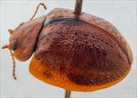
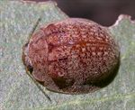
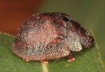
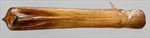
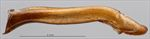
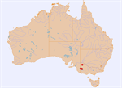

Click on images to enlarge
{kind=link}

Male, Kaniva, Victoria
{kind=link}

Female, Kaniva, Victoria
![Male, Horsham, Victoria [Geoff Walker]](assets/image/Ta89/Ta89_A18-316b_SM.jpg){kind=link}

Male, Horsham, Victoria [Geoff Walker]
{kind=link}

Aedeagus, dorsal view (Kaniva, Victoria)
{kind=link}

Aedeagus, lateral view (Kaniva, Victoria)
{kind=link}

Distribution
Name
Ta89 - Trachymela laeviventris (Blackburn)
Reference specimen
2004-493, Kaniva, Western Victoria.
Adult Description
Length: ♂ 7.7–8.9 mm (n=6), ♀ 7.5–9.3 mm (n=7).
Colouration:
- Head: light- to dark-brown, almost always with a black patch on either side of central suture and behind fronto-clypeal suture, sometimes the patch is no more than an area of diffuse darker colour, rarely the patches coalesce across central suture; labrum yellow-brown, mandibles black-tipped; antennomeres 1–3 straw-brown, 4–11 at least fractionally but usually considerably darker, rarely almost black, outer 2–5 antennomeres usually with distal extremes darker than proximal.
- Pronotum: brown, concolorous with head, sometimes with a few small, diffuse darker maculae.
- Scutellum: variable, brown, concolorous with or somewhat darker than pronotum, usually narrowly bordered with dark-brown or black, or completely black.
- Elytra: brown, concolorous with pronotum, almost always with some black (or dark-brown) markings that may include a broad band bordering the elytral suture and extending from scutellum to about elytral summit and a thin elevated ridge (sometimes interrupted) extending from anterior margin to just past level of humeral callus, otherwise the black areas are mostly confined to the verrucae that are scattered over the disc, rarely elytra lack any dark colouration; humeral callus concolorous with or slightly darker than surrounds, less often black; punctures concolorous with or slightly darker than interstices.
- Venter & Legs: head with black gula or completely black; prosternum black, other thoracic sternites variable, usually dark-brown or almost black, less often a much lighter shade; abdominal ventrites light- to mid-brown, with 1st often darker than the others; legs light-brown, sometimes with darker patches; epipleura often black near posterior extreme, the width of the black area thinning anteriorly, sometimes completely brown.
- Cuticular Wax: a relatively light and slightly uneven sprinkling of either greyish or light-brown.
Morphology:
- Shape: body high, with a sharp discontinuity in slope between prothorax and elytra, elytral summit clearly in front of middle of elytral margin.
- Head: puncture size relatively small (pd ≈ 1.5–2×ef) and evenly and densely distributed. Antennae long (AL/BL: ♂ 45–51%, ♀ 39–40%), filiform.
- Pronotum: almost evenly curved transversely over discal area, with foveal depression shallow, rarely absent; a very small, round elevation sometimes present behind centre of each eye; puncturation usually clearly impressed, similar in size or fractionally larger than those on head, very evenly distributed and dense in discal area, interstices in discal area relatively smooth, never obscuring punctures, punctures becoming much coarser towards margin. Front margins join lateral margins in a smoothly rounded right-angle, with lateral margin usually straight for some distance before curving smoothly (rarely slightly unevenly) and gradually towards rear margin.
- Scutellum: surface smooth or slightly rough in texture, unpunctured.
- Elytra: surface almost evenly and quite strongly curved in lateral view until close to apex where curvature becomes concave so that apex projects slightly, evenly curved transversely over disc with slightly to quite strongly explanate margins; many small, round verrucae, some with a very fine central puncture, are scattered over disc, the most prominent and usually largest of these are often loosely arranged in a longitudinal series that begins with a thin ridge midway between scutellum and humeral callus; punctures relatively small, quite evenly distributed but often partially obliterated by interstices; interstices rough, producing many fine wrinkles, many running transversely and sometimes joining verrucae into extended ridges; surface discontinuous under humeral callus. Vertical extension of epipleura very large (HCE/PW = 0.44–0.47).
- Venter: prosternal process almost parallel-sided and quite thin before widening towards posterior, open or closed anteriorly, a scatter of short setae on prosternal process, absent from mesoventrite, a single seta on anterior and median trochanter; front edge of metaventrite beveled, truncate; inner (horizontal) part of epipleura broad, forming a distinct ledge almost to apex, lacking setae.
Male Genitalia (Aedeagus):
- Dimensions: very long (LPE/BL = 0.51–0.54).
- Dorsal view: shaft almost parallel-sided for a short distance from base before sides diverge very gradually and evenly initially, then more rapidly towards widest point about 10% of distance from apex, from where sides converge towards apex in a smooth arc; dorsal surface with well-defined dorso-median channel with a thin, tall ridge extending along its apical half; tip prominent and smoothly triangular.
- Lateral view: shaft curved about 35° near base then almost straight, though with a sinuous ventral surface before a 45° downward curve near apex, dorsal surface also curves sharply downward there, so that ostial opening is oriented at almost 90° to dorsal surface, tip deflexed.
Similar species
- Ta45: these two species are clearly closely related, both having the horizontal inner part of the epipleura unusually broad and sharing the unusual structure of the aedeagus. Ta45 is a species of the eastern highland areas, whereas Ta89 is distributed in the mallee regions of eastern Victoria and South Australia.
- Ta117: this species is similar in many ways to Ta89, both having large vertical extensions of the epipleura, relatively inconspicuous verrucae, and many individuals of both species have the anterior half of the elytral suture broadly bordered in black. Besides the very different form of the aedeagus, they can be separated by the colour of the inner surface of the epipleura, those of Ta117 being mostly black while those of Ta89 are brown over most of their extent.
Notes
- Taxonomy: Identification as Trachymela laeviventris (Blackburn) was confirmed by comparison with the type specimen in the Natural History Museum, London (BMNH).
- Distribution & Abundance: Distributed in the mallee regions of eastern Victoria and South Australia.
- Host Associations: Ta89 has been collected from stringybark species, including E. baxteri.
- Morphological Variation: This species is very variable in several characters, including its colour, presence of dark markings, and the sculpture of the elytra. The aedeagus is very distinctive.
Copyright © 2026. All rights reserved.